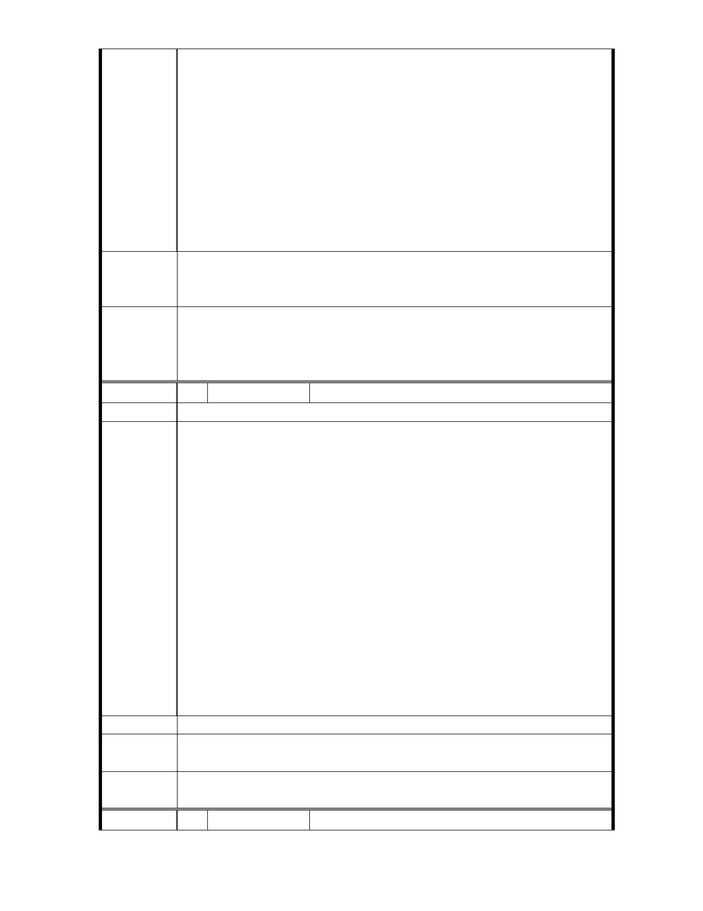

茲以本會關注外雙溪地區，具有豐富文化藝術典藏，享譽國際之
故宮博物院，每年吸引國內外觀光客數百萬人次之多，故宮週邊
環境維護確為本市面對外來遊客的重要門面，緣此，本會基於共
同支持與參與市政建設的理念，善盡建言之初衷，針對臺北市士
林區至善段二段 113 巷與士林區 146 號已開闢綠地公園（至德公
陳 情 理 由 園）之間的至善路 5 小段 74、75、76、77 等地號土地，都市計畫
為機關用地，因需地機關多年來並未依計畫使用，讓破舊違建佔
用，破壞重要景觀至鉅，特此具函建議貴府儘速協調故宮依計畫
使用 否則應檢討變更為綠地，以便與毗鄰之士林 146 地號綠地（
已開闢）結合，改善周邊整體景觀外，地盡其用，以符都市計畫
與土地資源之妥善利用。
建請貴府針對士林區至善段5小段74、75、76、77地號公共設施用
建 議 辦 法 地（機關用地）儘速依都市計畫開闢使用，以維故宮週邊環境景
觀。
專
結
案
小
組
論
同編號11
委
決
員
會
議
同編號 11
編 號 19 陳情人 臺北市不動產及土地資源發展協會
建 議 位 置 士林區至善段五小段 74、75、76、77、79 等五筆地號土地
主旨：有關陳情將士林區至善段五小段 74、75、76、77、79 等五
筆地號土地配合「臺北市士林區外雙溪地區都市計畫通盤
檢討（主要計畫）案」變更機關用地為公園綠地乙案，請
查照。
說明：本會業尊前項來函依臺北市都委會通知餘 9 月 16 日下午 2
陳情理由
時列席旁聽旨揭計畫案專案小組第 2 次會議，並進場說明陳
情事項，唯據了解，該機關用地管理機關故宮博物院仍基於
本位主義不同意變更為公園綠地，本協會期期不能接受，該
院既無能力處理員工佔用該機關用地，致該狹長土地上破陋
不協調之現況景象不能改善，所提大故宮計畫，並無落實景
觀改善之目的，因此本會站在市民主義立場及都市計畫市容
景觀角度，仍極力建請主管都市計畫之公部門應主動介入，
將該閒置之狹長地形之機關用地變更為公園綠地，連結緊鄰
該處之至德公園，以期景觀具穿透性，道路公園綠帶整體美
觀得以呈現，不致造成大故宮計畫的唯一缺憾，基此再次陳
情意見供請貴局卓參。
建議辦法
專
結
案
小
組
論
同編號11
委
決
員
會
議
同編號 11
編 號 20 陳情人 劉東奇
- 36 -